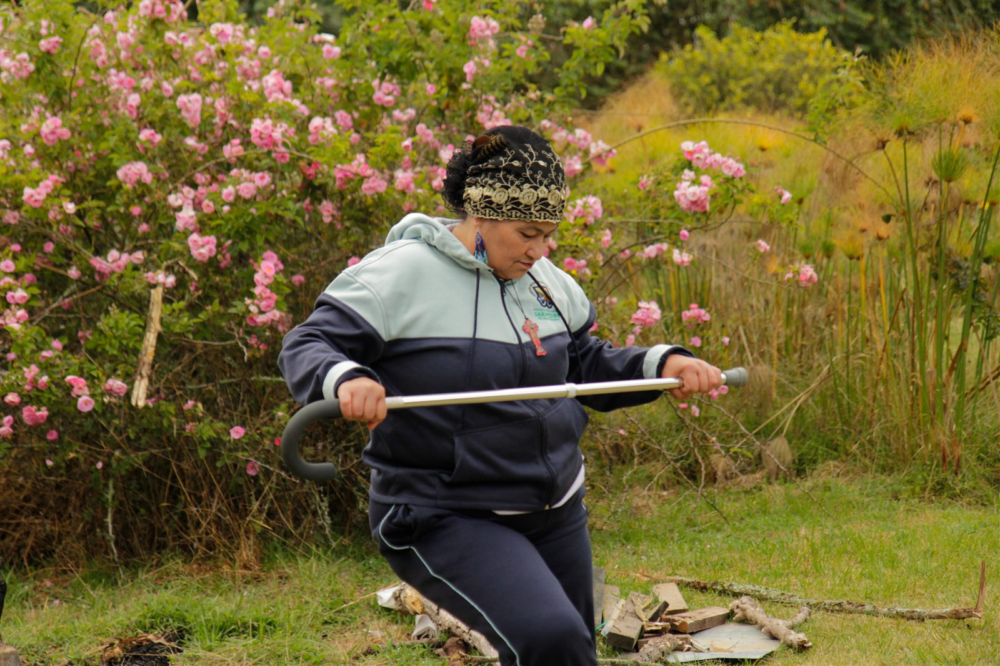
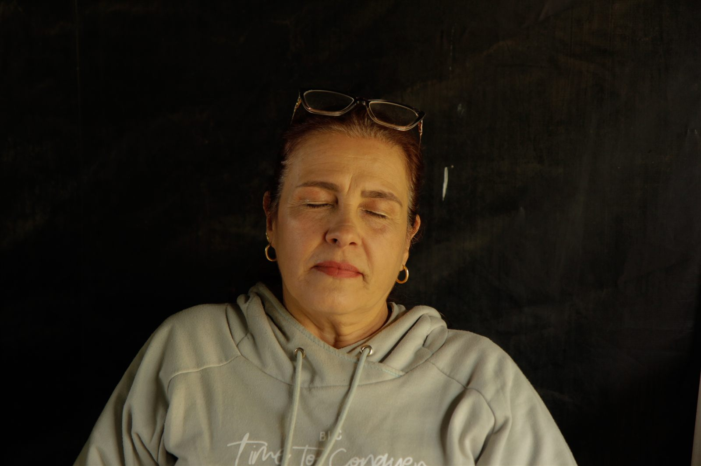
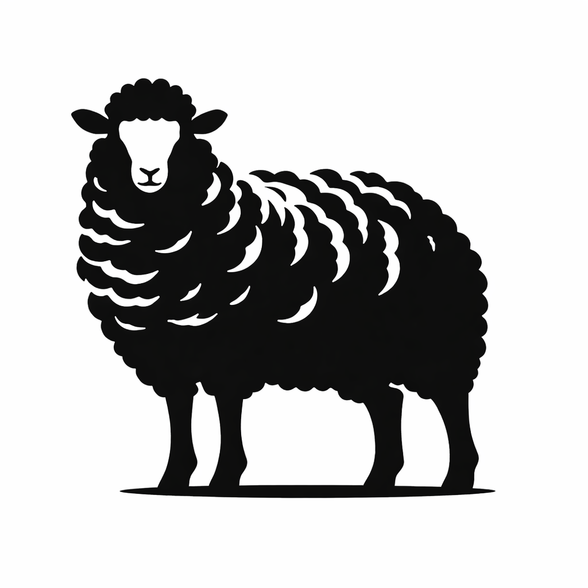
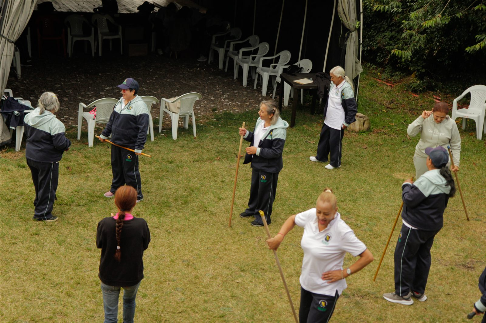
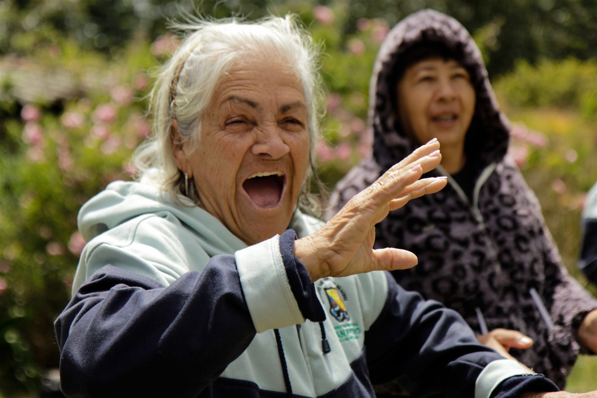

01
Semilleros
Espacios para explorar el cuerpo, la palabra, la imagen y las preguntas que nos mueven.
San Pedro de los Milagros · Antioquia
El Ensueño es un centro cultural que abre espacio al arte, la memoria y las historias que nacen en comunidad.
Conoce la programación
Centro cultural
El Ensueño
Hacer del encuentro un escenario
Somos un lugar de creación, aprendizaje y conversación. Un espacio para que niñas, niños, jóvenes y personas adultas se acerquen al arte, compartan saberes y hagan comunidad.

Creemos en el arte como una manera de habitar el territorio con sensibilidad, curiosidad y alegría.
Procesos que se transforman con las personas que llegan, se quedan y vuelven.

01
Espacios para explorar el cuerpo, la palabra, la imagen y las preguntas que nos mueven.

02
Pantallas, conversaciones y películas para mirar el mundo desde otros lugares.

03
Laboratorios de creación abiertos para aprender haciendo y compartir lo aprendido.
04
Escena, música, muestras y experiencias que celebran la imaginación colectiva.
Estamos preparando nuevos encuentros. Síguenos en Instagram para enterarte primero.
@elensuenocentroculturalHorarios
Martes · 9:00 a. m. – 12:00 p. m.
Sábados · 2:00 p. m. – 8:00 p. m.